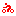
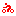

Эта страничка о.., эта страничка о.., эта страничка о... ...да ни о чем. Просто, я в разное время наследил в разных уголках Интернета и, вот, решил собрать все это воедино, в один общий винегрет. Чтоб не потерялось. 
| Обо мне | Гостевая | Галерея | Фото | Форум | Мои статьи: 1 2 3 4 5 6 7 | Мои рассказы: 1 2 3 4 5 6 7 8 9 10
| Мои рассказы: 1 2 3 4 5 6 7 8 9 10 | Мой проект: Велотреки
| Мой проект: Велотреки |
|